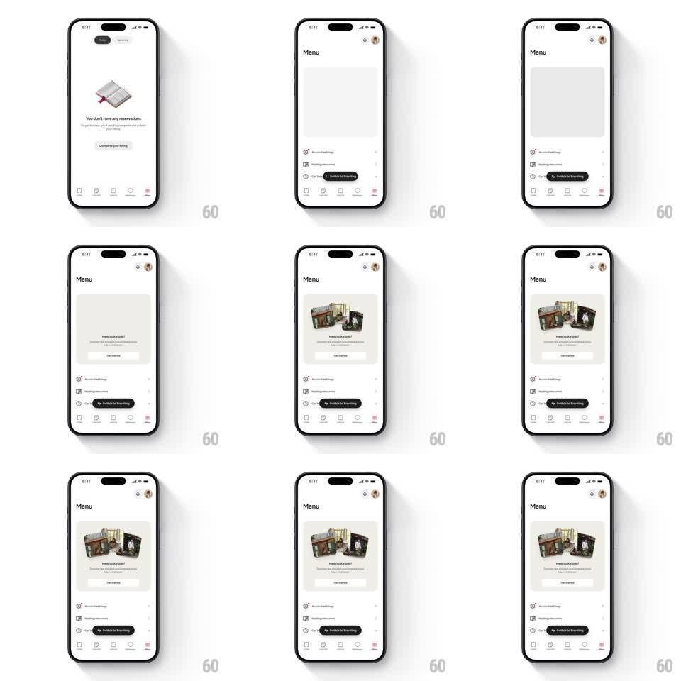

Media
Frame-by-frame

Rebuild this animation 1:1: Airbnb's menu promo card - the "New to Airbnb?" card's photo collage pops in thumbnail by thumbnail, each scaling up from nothing with a soft overshoot, then the copy and CTA settle in.

Rebuild this animation 1:1: Airbnb's menu promo card - the "New to Airbnb?" card's photo collage pops in thumbnail by thumbnail, each scaling up from nothing with a soft overshoot, then the copy and CTA settle in. ## Integration Integration: stack-agnostic spec - springs given as stiffness/damping, timed motions as duration + curve; map every value to your framework and animation library of choice. ## Scene Airbnb Menu screen, white: profile row, a large rounded promo card - a collage of small listing-photo thumbnails on top, "New to Airbnb?" headline, subcopy, and a "Get started" button - above menu rows (Account settings, Hosting resources, Get help, Switch to travelling) and the tab bar. ## Motion spec Pattern: staggered thumbnail scale-pop in a promo card. - The card fades in as a container first (200ms), thumbnails hidden. - Each thumbnail pops in: scale 0 -> 1 with spring ~400/16 (visible overshoot to ~1.08), staggered 70ms in reading order, each also rotating from +/-4 degrees to its rest tilt. - The thumbnails land with their own slight resting tilts (+/-2 degrees) and soft shadows - a scattered collage, not a grid. - After the last thumbnail, the headline, subcopy, and button fade up in sequence (translateY 8 -> 0, 200ms each, 80ms apart). - Idle: one random thumbnail does a gentle pulse (scale 1 -> 1.04 -> 1, 800ms) every ~4s. ## Calibration - Pops are quick and playful but small - thumbnails are 48-64px, so the overshoot reads as a bounce, not a jump. - The card never grows during the pops; thumbnails animate inside a fixed frame. ## Reduced motion Thumbnails fade in together (250ms); copy follows (200ms). ## Don't miss - The pop stagger starts from the most prominent thumbnail (largest/central), not strictly top-left. - The "Switch to travelling" pill is outside the card and never animates with it.